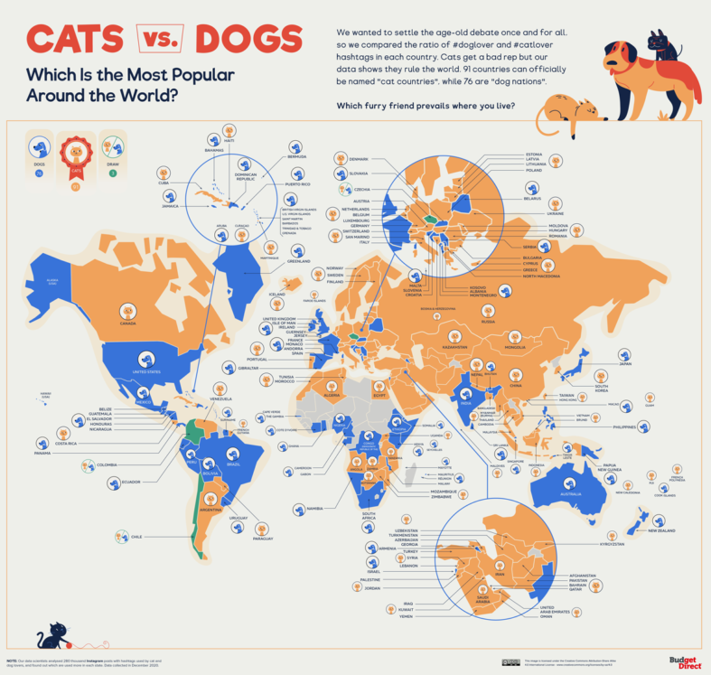
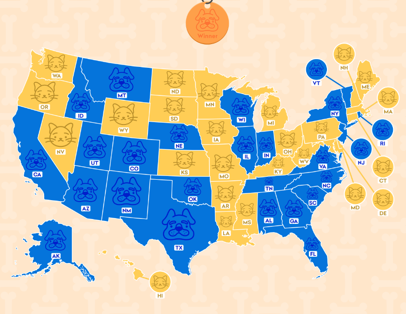

Dog lovers vs Cat lovers
Cilia Cui, Xiang He
For the source dataset, we use the dataset here.
1 Write up
In this article, we’re going to show you some visualizations about the popularity comparison between the dogs & cats, and the connected descriptions of them. We generate out interactive dashboard using the resource of dataset(see the button at bottom “Source Data”).
To achieve this, we’ve done Exploratory data analysis onto the dataset to check its general information(part 1 in final project), cleaning and filtering onto the dataset, creating the dashboard based on that(part 2 in final project), and linking this to the Jekyll vega-chart. You could check the output, namely the interactive dashboard in section 2.
Besides, we’ve searched works from other resources which are related to the comparison of popularity between dogs and cats, not only in the U.S of range, but in worldwide range.
2 Interactive Visualization
This dashboard is to explore the relationship, in an interactive way, between the number of dogs in each US state and the number of dogs per household on average. Select the square area on the left with the mouse, and the corresponding histogram can be displayed interactively on the right.
The diagram on the left is the driver diagram. It shows the average number of dogs in households by US state. Among them, the color of each square represents the total number of dogs in the state. The graph on the right is the driven graph, which represents the total number of dogs for each week.
3 Contextual visualization
For some other related visualization of this popularity topic, firstly we found this mapped picture from udgetdirect.com (source URL:https://www.budgetdirect.com.au/blog/cats-vs-dogs-which-does-the-world-prefer.html)
We could clearly check onto the plot to figure out the total preference with in a country over the world. For example, the United States residents seem to have more population that love dogs, while Canadians seem to prefer cats more in general.

Apart from this plot, we also found a mapped picture in the U.S range from time2play.com (source URL: https://time2play.com/blog/cats-states-vs-dog-states/)
We could check the preference of states easily via the color! But it lacks some information of the relative amount(like the level of preference in dog or cat represented in depth of color), which i think could be a part that’s able to be improved.
